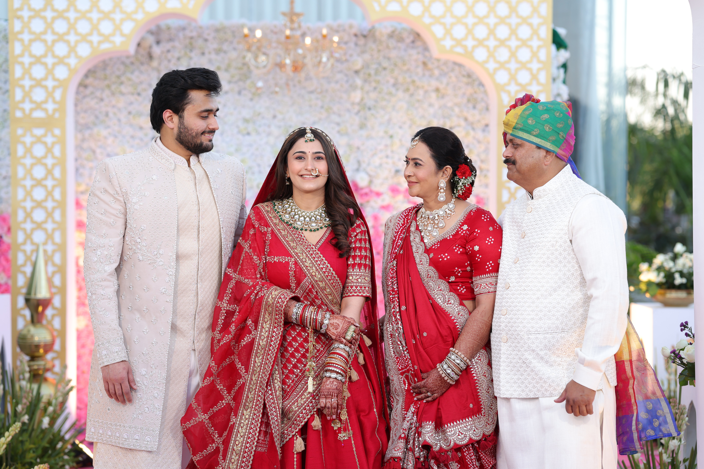
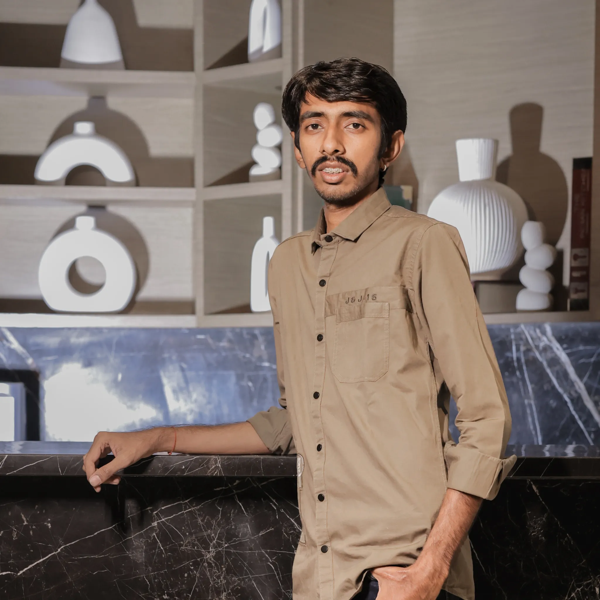

PHOTOGRAPHY SINCE 2019
Karan
Shah
Wedding, Maternity & Religious Photographer in Ahmedabad.
Capturing the moments that become memories.
THE PHOTOGRAPHER
Stories worth
remembering.
Since 2019, Karan Shah has been documenting meaningful moments through an honest, emotional and timeless photographic approach. From the energy of weddings to the quiet anticipation of maternity and the spiritual beauty of religious occasions — every frame is created with intention. Serving couples and families across Ahmedabad, Gujarat.
Based in Naranpura, Ahmedabad

ABOUT KARAN
Karan Shah
Photographer · Visual Storyteller
Photography for me is more than creating beautiful images. It is about preserving feelings, relationships and moments exactly as they were experienced. Based in Naranpura, Ahmedabad, Gujarat.
SELECTED STORIES
A collection of moments.
Emotions, rituals, people and memories — preserved in a timeless visual language. Explore wedding, maternity and religious photography from Ahmedabad.


01 · WEDDINGS
Wedding Photography Ahmedabad
The laughter, rituals, quiet glances and unforgettable celebrations. The approach is natural and intentional — preserving the story as it truly felt. Serving weddings across Ahmedabad and Gujarat.
Plan Your Wedding Story ↗
02 · MATERNITY
Maternity Photography Ahmedabad
Capturing anticipation, connection and the beauty of an extraordinary chapter with photographs that feel intimate and timeless. Available for maternity photoshoots across Ahmedabad.
Plan Your Maternity Session ↗
03 · SACRED MOMENTS
Religious Photography Ahmedabad
Thoughtful composition and respectful storytelling turn rituals and spiritual occasions into timeless visual memories. Available for religious ceremonies across Gujarat.
THE PHILOSOPHY
"I don't just photograph moments.
I preserve how they felt."
THE STUDIO
Navkar
Photography
Karan Shah is the owner of Navkar Photography, an Ahmedabad-based photography brand dedicated to creating meaningful visual stories.
Naranpura, Ahmedabad
Follow @navkar_photography.09 ↗KIND WORDS
Stories from clients.
“Karan made every moment feel effortless. The photographs brought us right back to the emotions of the day.”
BEHIND THE FRAMES
Follow the latest stories.


LET'S TALK
Let's create
your story.
Have a wedding, maternity session or special occasion coming up? Reach out to Karan Shah, photographer based in Naranpura, Ahmedabad.
+91 6355 859 969 Naranpura, Ahmedabad, Gujarat Start an Inquiry on WhatsApp ↗